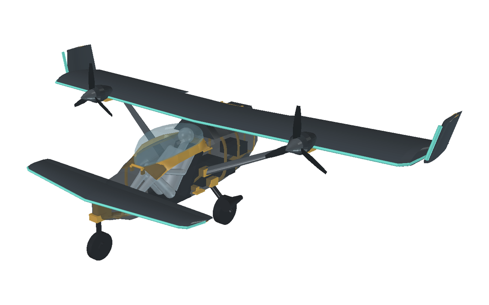
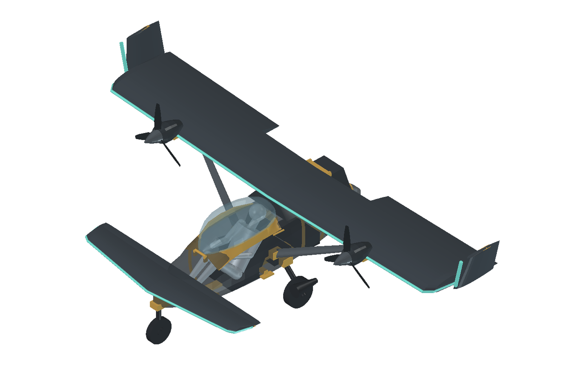
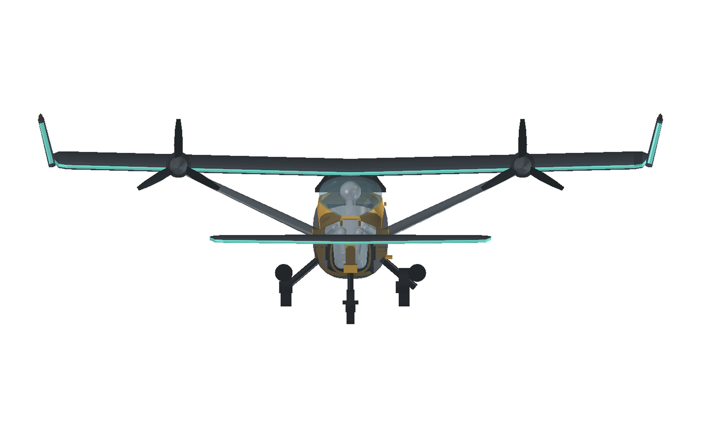
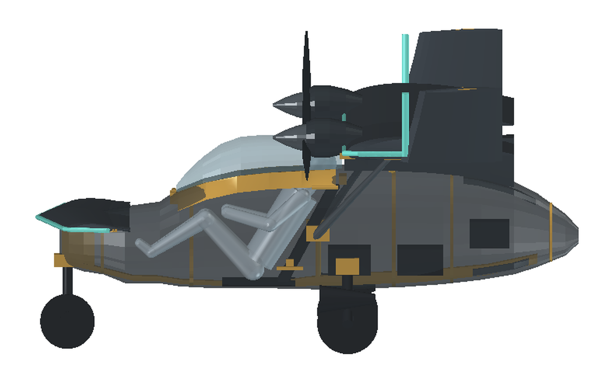
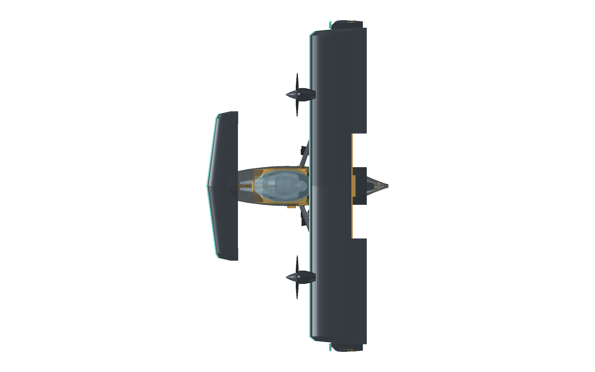
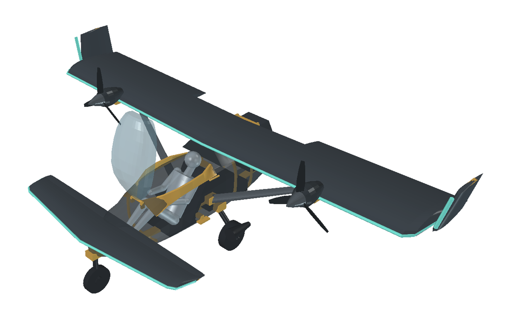
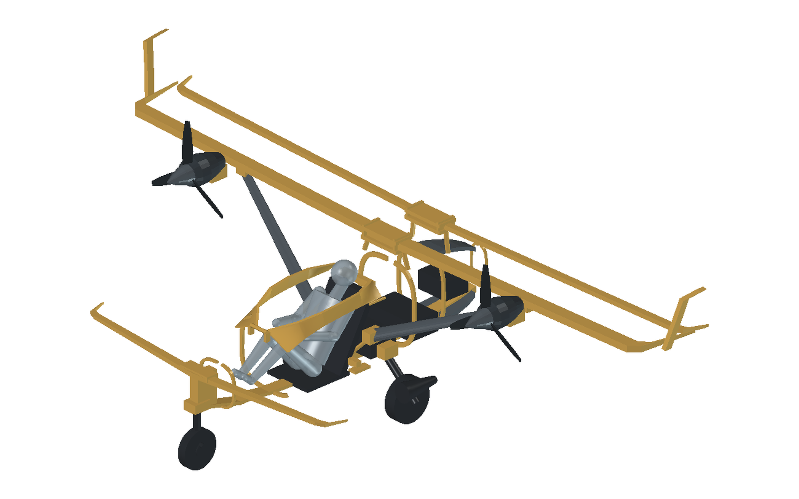

从一句需求到一台能继续改的三维模型，固定十步。 这页同时是流程说明书和 X1 概念机的完整案例：每一步都写着「该做什么」和「这一次实际得到了什么」。

单人 / 多人？短距起降还是巡航优先？展长或机库是否卡死？能源是电池还是油？逐项追问到九成把握，再出方案。
由翼载与失速速度反算 CLmax；算完不要马上加大机翼——先把整条升力链逐环摊开。
书写 CL_eff = CL_w × (S_w + k·S_c)/S_w，看增升件要先加在谁身上。
按 ΔCL/代价 排序：干净翼型 → 单缝襟翼 → 吹气 → 螺旋桨洗流 → 展向覆盖范围。
俯视读轮廓（箭头/圆翼/直翼）、前视读脸（对称/节奏）、侧视读体量（豆荚/雪茄/箱）；三条要能共存，选一个能同时成立的，并写下为什么不选另外两个。
第一层外形（可改）；第二层主受力结构（翼盒/梁/接头）；第三层接口表（翼根、桨轴、起落架接地点）——接口一旦冻结，外形怎么改都不返工结构。
cadquery 米制建模；全部尺寸写进文件头常量；每个零件单独导 STEP + 颜色 + 类别；同一脚本顺带输出几何汇总与质量台账。
FreeCAD 里装配上色，出等轴测 / 前 / 侧 / 俯 / 低角特写 + 开舱 + 结构七张，逐张按判据挑缺陷，把缺陷写成可执行的修改项。
质量台账按零件累加，重心按零件质心加权；和设计目标比，超了就先动配重件的位置。
彩色 FCStd + STEP + STL + 五视图 + 几何/质量 JSON + 冻结接口表；同步写看板、过程日志、风险与拍板项。
七轮迭代，共 36 条缺陷。这一栏是 loop 里最值钱的部分：每一条都可以直接变成下一轮判据。
| 轮次 | 看到的缺陷 | 改法 |
|---|---|---|
| v1 | 机翼悬在舱顶上方 0.5 m，像 1970 年代的伞翼超轻机 | 翼根高度 1.55 → 1.16，机翼埋进舱顶 |
| v1 | 平板翼，15% 厚度、无前缘特征 | 13% 厚度 + 青色前缘防磨条 |
| v1 | 鸭翼又小又低，前视读不出来 | 跨度 2.70、抬到 z = 0.80，成为前视的「下颌」 |
| v1 | 座椅靠背装反、襟翼缝 21 mm 漏光、整流锥是个球 | 重建座椅；缝收到 3 mm；整流锥改四段放样 |
| v2 | 侧视像潜艇：机头圆钝、机尾短、舱盖像玻璃球扣在平板上 | 机头下垂、机尾延到 2.70 并上翘、舱盖底缘跟随机身顶线 |
| v2 | 襟翼缝在白底下是一条亮线，把机翼劈成两片 | 襟翼前缘贴住翼盒后缘，整体下沉 3 mm，缝变成暗台阶 |
| v2 | 撑杆交叉成 X，前视一团乱线 | 改成每侧一根带整流的撑杆：前视一条斜线 |
| v2 | 翼梢小翼是纸片，翅痣是一根棍 | 加高到 0.47 m、加厚到 11.5%；翅痣改成沿前缘的加粗条 |
| v2 | 整流锥是抢眼的青色大圆盘 | 缩到 Ø86 → 尖，改金属色 |
| v3 | 机翼后段下表面与机身顶面之间有 0.3 m 悬空缝 | 抬后段顶面 + 加翼根整流罩 |
| v3 | 整流罩与机翼下表面之间 4 mm 白缝 | 整流罩顶面抬高 15 mm 埋进机翼 |
| v3 | 全展 6.04 m，超了 6.00 m | 半展 2.88 → 2.86，小翼外倾 15° → 14° |
| v4 | 乘员是 0.34×0.42 的盒子加一个球，没有腿，比真人小一号 | 改搬 V11 D60 的 1.70 m 坐姿假人（13 件实体） |
| v5 | 真人体长 1.22 m，机头前方只剩 0.86 m，脚会伸到机头外面 | 机头前移 0.45 m（全长 2.70 → 3.15 m），鼻轮移到 x = −0.40 |
| v5 | 鸭翼原位置正穿过小腿与膝盖 | 鸭翼整段前移到机头尖（后缘 x = −0.02、z = 0.80），保留青色前缘 |
| v5 | 竖直座椅靠背与假人 30° 后倾的背线打架 | 座盆改薄到 30 mm，靠背按假人背线放样；干涉自检 0 项不合格 |
| v5 | 乘员前移 0.35 m，含乘员重心前移 0.18 m | CG 1.108 → 0.926（翼根前缘后 4.6% 弦长）；鸭翼配平余量待气动复核 |
| v3 | 出图留白过多、机体偏小 | 后处理裁白边 + 等比缩放居中，6% 边距 |
| v4 | 假人坐不进舱：头顶 1.31，翼根前缘 x=0.86 处的机翼下表面只有 1.16——头直接穿过机翼 | 翼根抬到 1.28、座舱顶线抬到 1.12；座椅落到电池包上，乘员改略后倾低坐姿，头顶 1.217 |
| v4 | 第一次直接抬到 1.46 m：舱盖变成 0.36 m 的大玻璃球，机身像飞艇顶着机翼，全高 2.02 m | 翼根收回 1.28；舱盖压成 0.18 m 低泡，后段由代码夹在机翼下表面以下 15 mm |
| v4 | 干涉全靠看图判断，三版都没发现乘员撞头 | 加 check_x1.py：20 对零件求交集体积，乘员/座椅/舱盖对机翼必须为 0 |
| v4 | 舱内看不见，无法核对空间 | 机身壳体 kind=hull 半透明，座椅、乘员、电池随时可见 |
| v4 | hero 相机用世界 Z 旋转拼出来，镜头跑到机翼上方成了俯视 | 改成显式 lookAt 构造相机矩阵：机头左前 20° 低角 3/4 |
| v6 | 人没有进出逻辑：舱盖整体在机翼下面，向上、向后、向侧开都会撞翼根 | 舱盖改前铰（x=0.245、z=0.958），抬起 75° 后整块立在机翼前缘之前；加座舱围缘 X1-403、左侧踏板 X1-406、右侧手扶；x1_open.png 出开舱图 |
| v6 | 「空间局促」一直靠肉眼判断，没有数 | 沿 x 切片量头顶余量：最小 55 mm @ x=0.83；肩宽 0.494 m，舱内净宽 0.71 m |
| v6 | 舱后 1.6 m 体积只放了一块电池，其余是空的 | 电池坐龙骨 x 0.92–1.72；1.78 起改航电舱 + 行李底板 + 顶部舱盖，25 kg 行李压 2.20 把 CG 从 0.933 拉到 1.094 |
| v6 | 只有外形没有一根梁：结构全靠「隐含质量」，模型里看不见载荷路径 | 新增 16 件结构：主/后梁、鸭翼梁、小翼梁、龙骨、5 道 C 形隔框、机翼/鸭翼对穿、电机座、起落架接头、围缘、前铰、踏板；单独配色，出 x1_struct.png |
| v6 | 结构一进模型就撞：龙骨顶穿大腿、脚舱净高只剩 48 mm | 脚舱段龙骨压到 30 mm、座舱段 27 mm，电池抬到龙骨顶面；check_x1.py 从 20 对扩到 30 对，仍 0 项不合格 |
| v7 | frames 只有一半龙骨：机头/尾段的隔框是 C 形半圈，剪力只挂在龙骨上 | 机头 −0.20、翼身接头 1.568、尾段 1.92/2.52 改闭合整圈；只有座舱 0.34 保留 C 形让乘员坐进去 |
| v7 | 主机翼和机身连接方式不明确：模型里翼根直接插进壳体，没有可装配的接头 | 改两副夹箍：前箍在 u=0.28（x=1.568）上下夹板包住主梁、两侧封边、两根 Ø38 斜撑落到接头框；后箍在 u=0.72 只做抗扭 |
| v7 | 撑杆和主结构受力关系不明：上端悬在翼下、下端贴在薄壳上，看不出力往哪走 | 加 X1-412 撑杆接头：上夹主梁下缘（x=1.568），Ø32 斜拉杆穿机身侧壁直落 x=1.12 龙骨；撑杆只受拉，弯矩由夹箍对框来抗 |
| v7 | 机舱后面太空、人的空间太小：人被夹在机头与机翼之间，脚尖离机头尖 11 cm，头顶越过翼根前缘 | 人整体后移 0.35（舱内净长 0.74 → 1.01 m），舱盖拉到 1.265；人完全在玻璃下，切片实测头顶余量 49.9 mm |
| v7 | 舱盖末站 1.29 顶进翼根整流罩（前缘后移到 1.28），干涉 329.6 cm³ | 舱盖末站收到 1.265，重跑自检 0 项不合格 |
| v7 | 座舱后横挡贴住脑后，与乘员干涉 27.4 cm³（x 1.212–1.230、z 1.064–1.104） | 横挡降到底座并后移到 x 1.245、z 1.005 |
| v7 | 前缘后移的代价：等弦翼让翼面积 6.35 → 5.86 m²，翼载 33.9 → 36.7 kg/m²，鸭翼升力份额 19.9% → 21.5% | 换取所有翼肋同尺寸（一套工装、一根工装梁）与舱内 0.27 m 净长；已记为风险 R-X1-05 |
| v7 | 等弦直翼把俯视的「箭头」读法丢掉了，平面形辨识度下降 | 母题退到青色前缘 + 翅痣 + 鸭翼；下一轮在翼尖前缘做局部后掠，找回俯视的方向感 |






外形定完再把「怎么装出来」落成规则：件号合并、大件一体、接口冻结、装配顺序单向。
| 件号 | 名称 | 数量 | 工艺 / 装配 |
|---|---|---|---|
| X1-101 | 机身壳体 | 1 | 复材两瓣模，分模面 z=0.72；舱段顶线一体成型 |
| X1-102 | 舱盖 | 1 | 亚克力热成型，前铰上翻开启 |
| X1-103 | 翼根整流罩 | 1 | 复材手糊，与壳体粘接 |
| X1-201 | 主翼 | 1 | 一件式：等弦 1.03 m、面积 5.86 m²；所有翼肋同尺寸，一套工装；翼根 4 螺栓，无中段对接 |
| X1-205 | 机翼主梁 | 1 | 碳盒梁，沿 28% 弦长一根通到翼尖；与翼盒共固化 |
| X1-206 | 机翼后梁 | 1 | 沿 72% 弦长，襟翼铰线，兼抗扭 |
| X1-214 | 鸭翼梁 | 1 | 与鸭翼共固化，中央段经 X1-411 落到龙骨前端 |
| X1-223 | 小翼梁 | 2 | 左右同件号，插进翼尖套筒 |
| X1-202 | 主翼前缘条 | 1 | 与蒙皮共固化，青色防磨 |
| X1-203 | 襟翼 | 2 | 左右同件号；下挂铰链，3 mm 台阶代替缝 |
| X1-211 | 鸭翼 | 1 | 与机头套接，中央段埋在壳体内 |
| X1-212 | 鸭翼前缘条 | 1 | 共固化 |
| X1-213 | 升降舵 | 2 | 左右同件号，8° 下反 |
| X1-221 | 翼梢小翼 | 2 | 左右同件号；翼尖 2 螺栓，外倾 14° |
| X1-222 | 翅痣 | 2 | 左右同件号，粘接在前缘 |
| X1-231 | 短舱 | 2 | 左右同件号；每侧 4 螺栓挂机翼 |
| X1-232 | 整流锥 | 2 | 左右同件号，金属色 |
| X1-233 | 螺旋桨 | 2 | 左右同件号；3 叶一副模，共 6 叶 |
| X1-234 | 撑杆 | 2 | 左右同件号；两端各 1 销，长度可调 ±10 mm |
| X1-241 | 前起落架 | 1 | 2 螺栓，轮叉一体 |
| X1-242 | 主起落架 | 2 | 左右同件号；各 2 螺栓 |
| X1-301 | 座椅 | 1 | 座盆 + 靠背一体，坐在龙骨顶面；4 点式安全带接 X1-402 |
| X1-302 | 电池包 | 2 | 两块 20 kg，骑在龙骨顶上夹住 1.568 接头框：x 1.18–1.44 / 1.60–1.88；装配时从舱口下放 |
| X1-303 | 航电盒 | 1 | x 2.04–2.28 托架，行李在上、设备在下，同一个舱口够得着 |
| X1-401 | 龙骨 | 1 | 脚舱段压到 30 mm 让脚放得下，座舱后恢复 70 mm 承弯 |
| X1-402 | 隔框组 | 5 | 机头/接头/尾段闭合整圈，只有座舱 0.34 是 C 形留腿；-0.20 / 0.34 / 1.568 / 1.92 / 2.52 |
| X1-403 | 座舱围缘 | 1 | x 0.27–1.23，舱盖底缘到机身侧壁的收口，兼作手扶；两侧同模 |
| X1-404 | 尾舱盖 | 1 | x 2.00–2.44 顶部开口，行李/航电从这里进 |
| X1-405 | 舱盖前铰 | 1 | 横管 + 两支座；抬起 75° 后整块舱盖立在机翼前缘 1.28 之前 |
| X1-406 | 登机踏板 | 1 | 左侧 x 0.95，收起贴住机身，放下踩上翼根 |
| X1-407 | 电机座 | 2 | 左右同件号；短舱后段接机翼主梁 |
| X1-408 | 起落架接头 | 1 | 三点式，鼻轮 + 两个主轮载荷直接进龙骨/隔框 |
| X1-409 | 行李舱底板 | 1 | x 2.06–2.40，25 kg 行李压在 2.20 作配平 |
| X1-410 | 机翼对穿 | 2 | 前后两副夹箍夹住主梁（u=0.28 / 0.72），各带斜撑落到 1.568 接头框；不靠整流罩传力 |
| X1-411 | 鸭翼对穿 | 1 | 鸭翼梁落到机头与龙骨前端 |
| X1-412 | 撑杆接头 | 2 | 上下各一副：上夹主梁下缘（x=1.568），下坐机身侧壁，Ø32 斜拉杆直落 x=1.12 龙骨 |
01 骨架：龙骨 X1-401 + 5 道隔框 X1-402 合壳前先固化，闭合圈整圈粘接 02 机身壳体 X1-101 / 围缘 X1-403 两瓣模合模，骨架预埋 03 主翼 X1-201（含梁 X1-205/206）+ 对穿 X1-410 两副夹箍先夹梁，再落 1.568 框 04 撑杆 X1-234 + 接头 X1-412 上下各一销，斜拉杆穿机身侧壁进龙骨 05 短舱 X1-231 / 电机座 X1-407 / 桨 X1-233 每侧 4 螺栓 06 小翼 X1-221 / 小翼梁 X1-223 / 翅痣 每侧 2 螺栓 + 粘接 07 起落架 X1-241/X1-242 + 接头 X1-408 各 2 螺栓 08 舱内：座椅 X1-301 / 电池 X1-302 ×2 / 航电 X1-303 从舱口下放，两块电池夹住接头框 09 舱盖 X1-102 + 前铰 X1-405 前铰上翻，扣合
cd ~/v10/model/x1 ~/v10/.venv/bin/python -I build_x1.py # 几何 + STEP + 质量/几何 JSON ~/v10/.venv/bin/python -I check_x1.py # 干涉自检（30 对 + 头顶余量切片） /Applications/FreeCAD.app/Contents/MacOS/FreeCAD assemble_x1.py # 装配上色 → FCStd pkill -f 'FreeCAD.app/Contents/MacOS/FreeCAD' /Applications/FreeCAD.app/Contents/MacOS/FreeCAD shot_x1.py # 七视图 PNG（含开舱/结构） ~/v10/.venv/bin/python -I reframe_x1.py # 裁白边、居中、统一构图
~/v10/model/x1/build_x1.py ·
装配：assemble_x1.py · 出图：shot_x1.py / reframe_x1.py